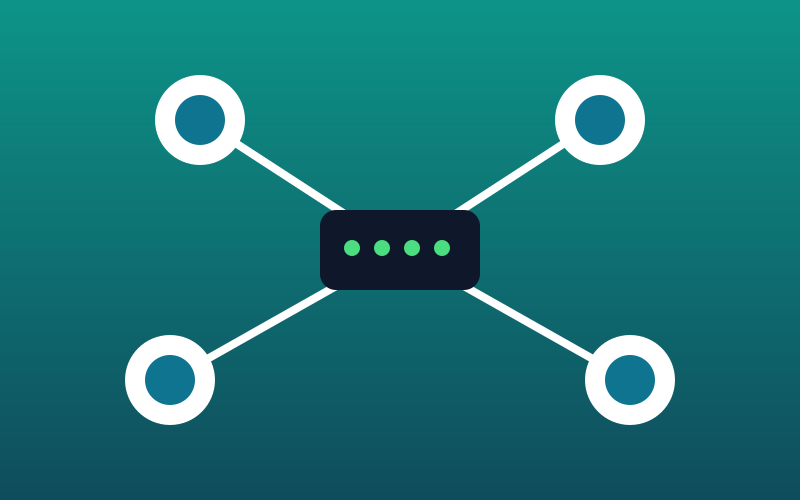

Ремонт ноутбуков и ПК
Замена экрана, клавиатуры, аккумулятора, чистка от пыли, замена термопасты.
от 800 сом
Сервисный центр в Бишкеке
Починим ноутбук, настроим Wi-Fi и защитим ваши данные. Бесплатная диагностика и гарантия на все работы.
Оставить заявкуTechFix — небольшой сервисный центр, который помогает студентам, семьям и малому бизнесу. Мы работаем с 2020 года и за это время отремонтировали более 3 000 устройств. Наши мастера ремонтируют ноутбуки и компьютеры, настраивают домашние и офисные сети и устанавливают программы. Перед ремонтом мы бесплатно проводим диагностику и честно называем стоимость. На все работы даём гарантию 3 месяца.
Замена экрана, клавиатуры, аккумулятора, чистка от пыли, замена термопасты.
от 800 сом

Подключение роутера, настройка Wi-Fi, локальной сети и принтеров в офисе или дома.
от 600 сом
Удаление вирусов, установка антивируса, резервное копирование и восстановление файлов.
от 700 сом
Диагностика бесплатная, даже если вы откажетесь от ремонта.
Большинство работ выполняем в течение одного дня. Если нужна запчасть под заказ — от 3 до 7 дней.
Да, на все работы и установленные запчасти действует гарантия 3 месяца.